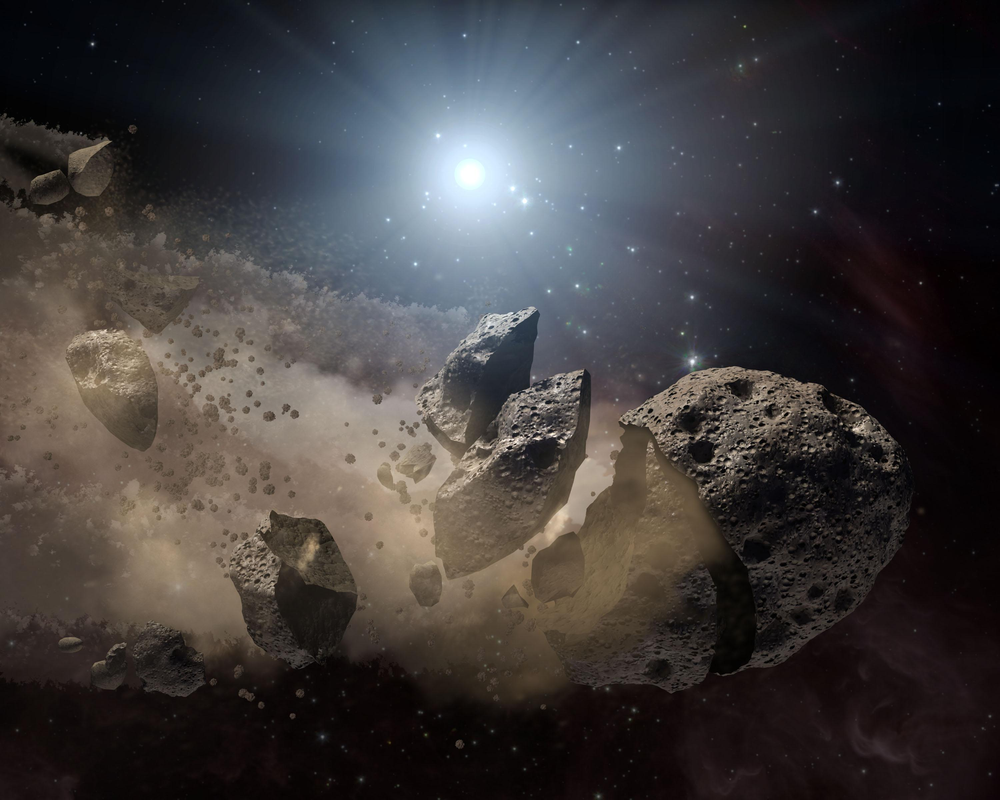

태양의 미래

태양은 앞으로 약 50억년 정도 지금과 같은 모습으로 활동할 것으로 기대되고 있다.
이것은 태양에 남아있는 수소의 양으로 계산한 결과이다. 약 50억년 후가 되면 중심부에 있는 모든 수소가 핵반응을 하여 태양은 주계열을 떠나게 된다. 결국 중심부에는 헬륨만 남아있게 되고 에너지를 생성할 수 없어 수축해져 갈 것이다. 이때 중심부가 수축함에 따라 생기는 열에너지로 중심부 바로 바깥부분의 수소는 반응을 시작한다.
태양은 점점 커져 그 반경은 수성궤도에 이를 것이며, 밝기 또한 매우 밝아질 것이다. 이제 태양은 적색거성이라 불리게 된다. 한없이 수축해져 가는 헬륨핵의 자체 온도가 1억K가 되는 순간 헬륨들은 급격히 반응을 시작한다. 이를 '헬륨 섬광(Helium Flash)'라 부른다.
이후 태양은 잠시 동안 안정된 상태인 준거성 단계에 접어든다. 하지만 헬륨의 급격한 반응으로 이 단계는 오래 지속되지 못한다. 중심부의 모든 헬륨이 탄소로 바뀌게 되면 또다시 외부층은 팽창하고 탄소로 이루어진 핵은 수축한다. 이제 태양은 적색거성을 지나 초거성에 이르고 계속해서 팽창하다가 행성상 성운이 된다. 한편 한없이 수축해져가는 핵은 한계에 이르고 백색왜성으로 생을 마감한다.
결국 태양은 백색왜성이 되어 다른 행성들을 지배할만한 힘을 잃게 되고 홀로 태양계에 남겨지게 되는 것이다.